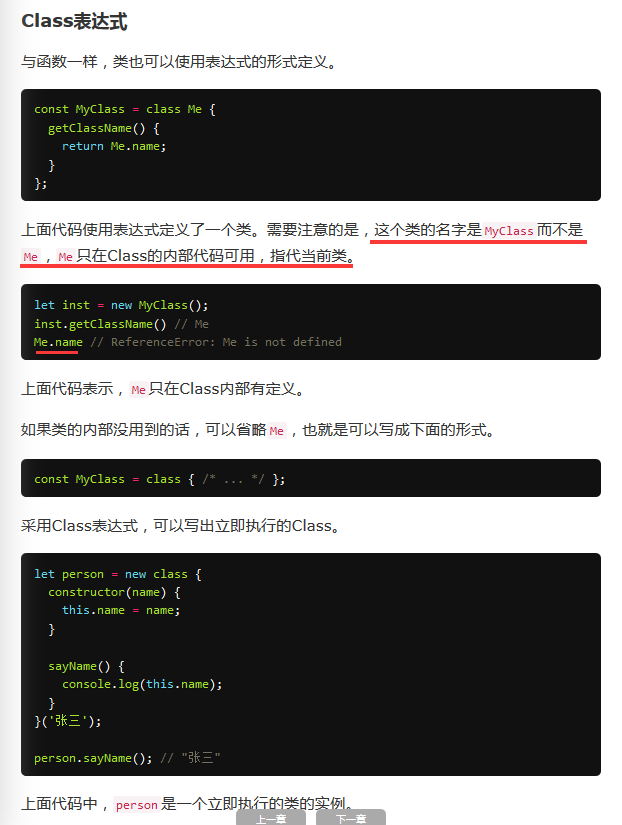

class Potin {
fn(a,b){
this.a = a;
this.b = b;
}
toString(){
return '(' + this.a + '，' + this.b + ')';
}
}
// ES5的构造函数Point，对应ES6的Point类的构造方法。
// 注意，定义“类”的方法的时候，前面不需要加上function这个关键字，直接把函数定义放进去了就可以了。另外，方法之间不需要逗号分隔，加了会报错。
class Bar {
do(){
console.log('你好，哈哈哈哈');
}
}
let a = new Bar(); //正确的调用
console.log(a);
a.do();
//***** 类的实例对象
class Point {
constructor(x, y) {
this.x = x;
this.y = y;
}
toString() {
return '(' + this.x + ', ' + this.y + ')';
}
}
var p1 = new Point(2,3);
var p2 = new Point(3,2);
p1.__proto__.printName = function () { return 'Oops' };
p1.printName() // "Oops"
p2.printName() // "Oops"
var p3 = new Point(4,2);
p3.printName() // "Oops"
//****
// Class不存在变量提升（hoist），这一点与ES5完全不同。
